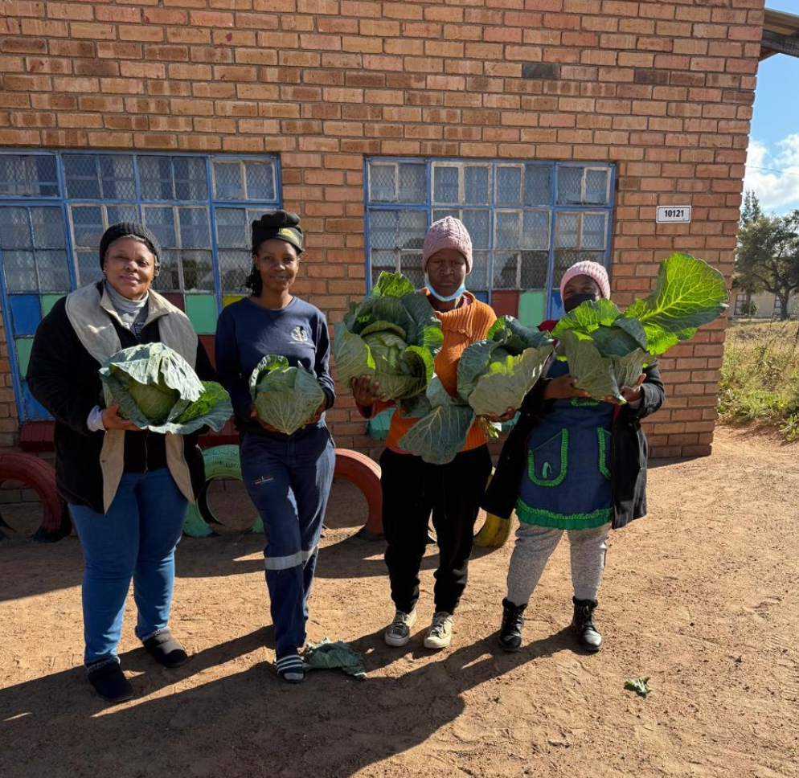

About Us

Farming Makes Lives Better
Wendy Serage Moshakga is the Director and CEO of Serage Holdings Pty Ltd, a farmer from Mbobo, Polokwane, in the Molekidong area. She started farming in 2021 with no land, no money, and no formal training — only determination and the belief that she could build something meaningful. To raise money for her first seedlings, she collected and sold cans. That small act of resilience became the foundation of an agricultural enterprise that now impacts hundreds of lives across South Africa and beyond.
For Wendy, farming has never been only about growing vegetables. It has always been about growing people, opportunities, and hope. Her farm in Limpopo is today a recognised training hub attracting participants from all nine provinces of South Africa, as well as Botswana and Zimbabwe.
- Founded Serage Holdings in 2021 with zero capital
- Mentored unemployed youth who now run their own farms
- Nominated for the YK Leadership Award 2025